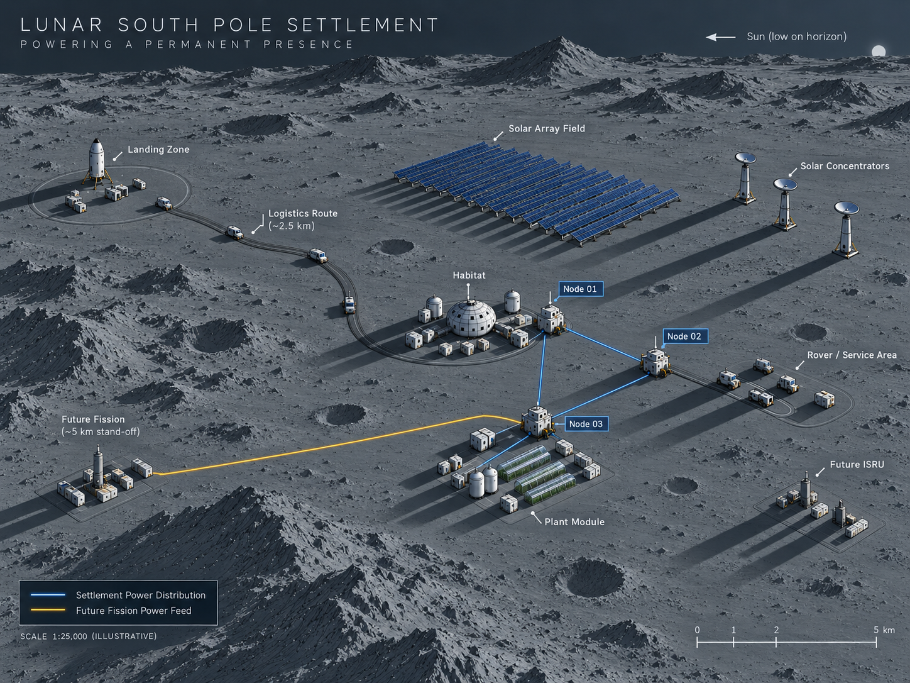
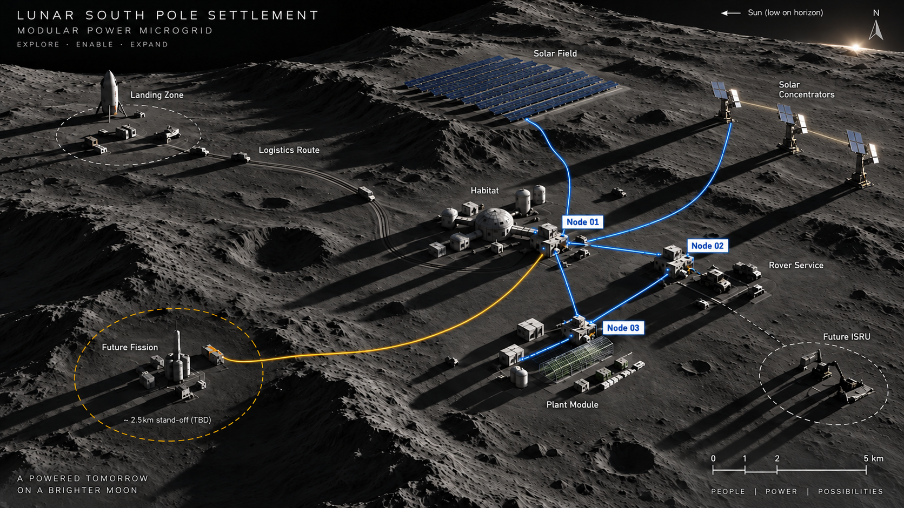
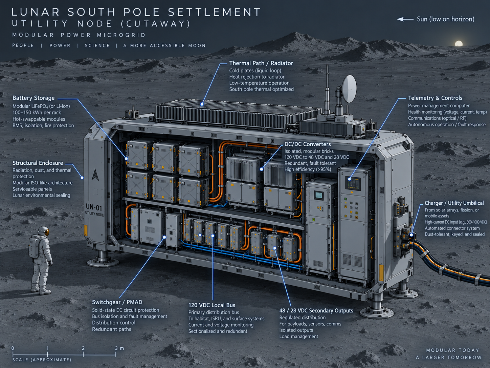
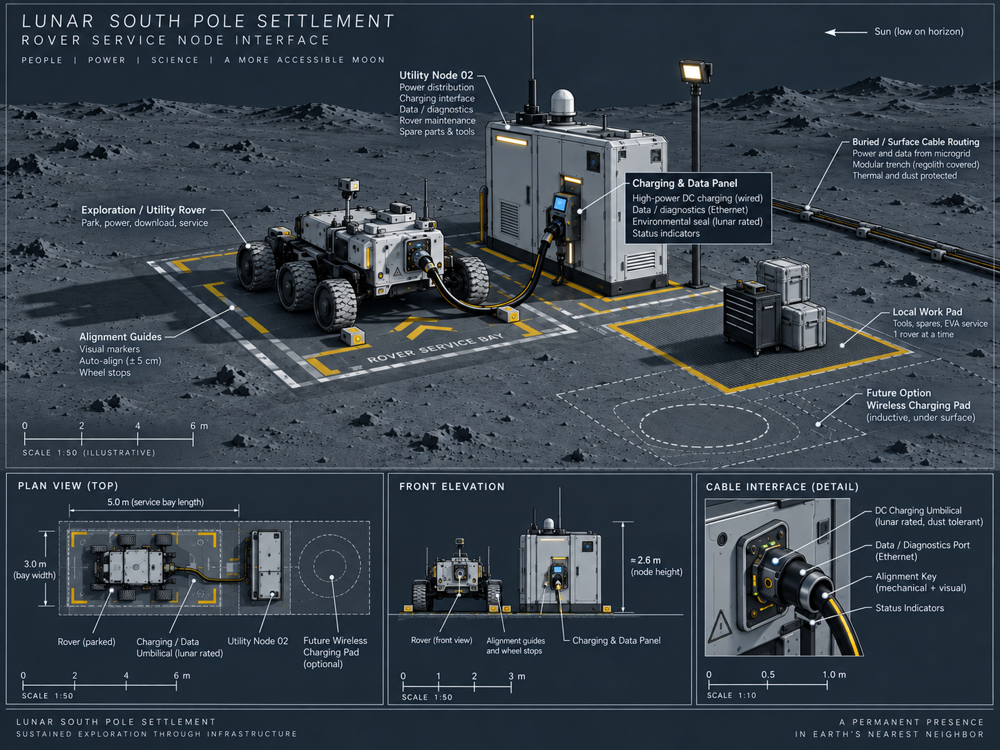
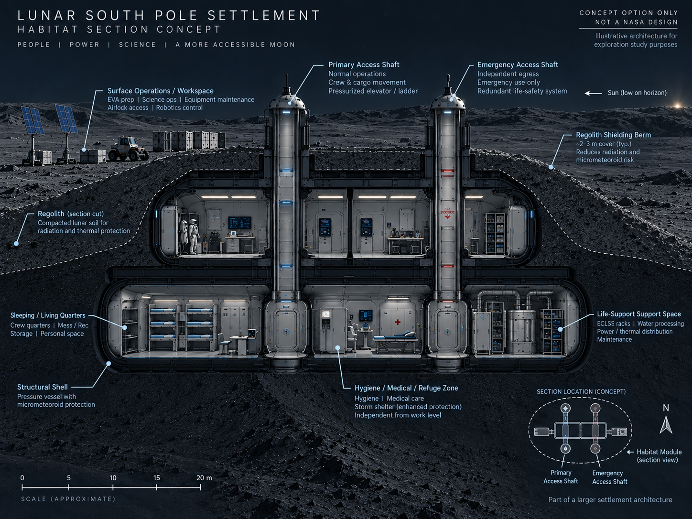

Node 01
Seed / Core Utility Node
- First landed battery and PMAD
- Autonomous controls and telemetry
- Initial local service zone
- Start-point for distribution growth
LOGIC • MODULAR INFRASTRUCTURE • ARCTIC PALETTE
A modular utility architecture for the lunar south pole: generation, storage, conversion, distribution, charging, service, survival, rescue, and growth built node by node.
The architecture is intentionally transferable to other remote, logistics-constrained environments.

CONTEXT RENDER
The rendering provides environmental context: low solar elevation, long shadows, distributed assets, and the physical separation between settlement functions.

BIG IDEA
It is a working utility: generation, storage, high-voltage transfer, local conversion, vehicle service, thermal management, fault isolation, maintenance, and future expansion.
WHY LOGIC
This architecture is built around repeatable utility nodes and clear interfaces, so the system can grow landing by landing without redesigning the settlement every time a new load arrives.
SYSTEM
The model uses three baseline utility nodes so the architecture stays teachable, scalable, and operationally grounded.
Solar, storage-supported supply, later firm fission power, and optional optical concentration.
High-voltage trunk lines carry power across meaningful distances with lower current and lower loss.
Modular isolated DC/DC conversion acts as the lunar equivalent of distributed neighborhood transformers.
Nodes provide local 120 VDC service, secondary buses, charging, telemetry, isolation, and spare capacity.
Seed / Core Utility Node
Mobility / Service Node
Habitat / Plant Node
TRANSFERABLE INFRASTRUCTURE
The logic behind the system applies broadly: remote, sparse, logistics-constrained, high-consequence environments need modular power, clear interfaces, local service nodes, resilient storage, thermal awareness, and graceful expansion.
BUILDOUT
The site and model teach the system through installation order first, then engineering detail.
Establish the first autonomous utility capability and begin collecting real surface operations data.
Add drive-up charging, service logic, feeder extension, and a vehicle-oriented utility interface.
Separate critical habitat loads from expandable food and science systems, while preserving node commonality.
Add remote generation, more storage, more nodes, and future mission-specific load growth.
INTERACTIVE SYSTEM VIEW
The panels below separate architectural function from engineering detail so mixed-discipline teams can enter the model at the appropriate level.
ACCESS / LOGISTICS
Separated from the primary settlement to reduce plume, ejecta, debris, and operational risk.
INSTALLED FIRST
Establishes the first autonomous electrical utility capability before the settlement becomes crew-dependent.
INSTALLED SECOND
Supports rover turnaround, charging, diagnostics, maintenance, and future automated utility service.
INSTALLED THIRD
Separates crew-critical power from expandable plant, science, and discretionary loads.
VARIABLE GENERATION
Low solar elevation makes siting, orientation, shadowing, and actuator control fundamental design inputs.
FIRM GENERATION
Provides baseload capacity independent of local illumination, with stand-off and feeder routing treated as architecture variables.
EXPANDABLE LOAD
Starts small, expands in repeatable increments, and uses load shedding plus optical sunlight where practical.
SURVIVAL / RESCUE CONOPS
The architecture separates nominal operations from crewed survival, emergency refuge, uncrewed survival, and deep hibernation. Battery capacity guarantees the first refuge bridge; longer rescue endurance requires at least one independent surviving generation path.
| Operating state | Power | Primary intent |
|---|---|---|
| Nominal 6 crew | 12.50 kW | Full occupied operations |
| Handover 12 crew | 17.50 kW | Highest routine occupancy |
| Crewed survival | 8.65 kW | Full critical habitat systems retained |
| Emergency refuge | 5.25 kW | Smallest protected livable volume |
| Uncrewed survival | 2.40 kW | Preserve infrastructure and telemetry |
| Deep hibernation | 1.10 kW | Minimum extended-outage state |
HUMAN WARM CORE
Concentrate the crew in the smallest protected volume. Maintain reduced ECLSS, thermal control, command, communications, medical support, minimum lighting, and water access. Shed plant lighting, science, ISRU, routine charging, galley, and discretionary loads.
ELECTRICAL WARM CORE
Maintain battery, BMS, EMS, telemetry, network electronics, critical switchgear, and survival thermal conditioning. During normal operation, recover useful converter/PMAD heat before rejecting the remainder to the radiator.
SURFACE HMI
Exterior nodes use hardened indicators, protected controls, and service interfaces. Detailed diagnostics are presented remotely on a rover, habitat workstation, or connected service device.
ENGINEERING DRAWINGS
These drawings are the primary visual explanation of the system. They are scale-aware, deliberately restrained, and organized to support technical discussion across disciplines.



MODEL
The downloadable model includes facilities and loads, mission buildout, microgrid nodes, storage, distribution, charging, technology gaps, supply forecast, development tasks, and the power conversion layer.
6-crew nominal and 12-crew handover load cases with critical, essential, and discretionary branches.
Cargo-limited infrastructure growth tied to installation sequence and settlement expansion.
Explicit DC/DC transformation layer with waste heat, modular bricks, and N+1 logic.
Autonomous EMS, dust-tolerant umbilicals, modular PMAD, feeder repair, storage, and concentrator controls.
TEACHING NOTE
Begin with geography, landing access, and node placement. Then expose electrical ratings, mass, TRL, thermal headroom, conversion efficiency, and subsystem details.
DESIGN NOTE
The visual system emphasizes cold-region engineering, high-consequence operations, and infrastructure designed for remote and constrained environments.
DESIGN PRINCIPLES
PUBLICATIONS & RELATED WORK
This section separates released products from material still under technical or coauthor review.
Working manuscript covering the microgrid architecture, mission buildout, operating modes, Utility Node thermal survival, emergency refuge, rescue endurance, technology gaps, and CONOPS.
Functional Excel engineering model with load cases, distribution, storage, conversion, survival modes, and rescue endurance.
Download current WIP model →Placeholder for earlier lunar-power reports, architecture studies, conference material, and related team products.
Add citations / files as they are cleared for public release.Potential follow-on work includes feeder voltage trades, thermal survival testing, service-node demonstrations, and updated cargo-constrained buildout studies.
Future work product registry.DOWNLOADS
Download the current engineering workbook. Version 6.1 is a work in progress; its electrical allocations and architecture assumptions remain subject to hardware, site, and mission validation.